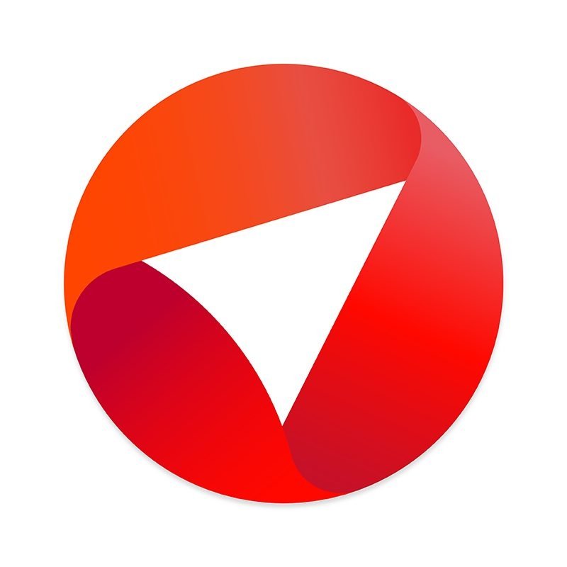
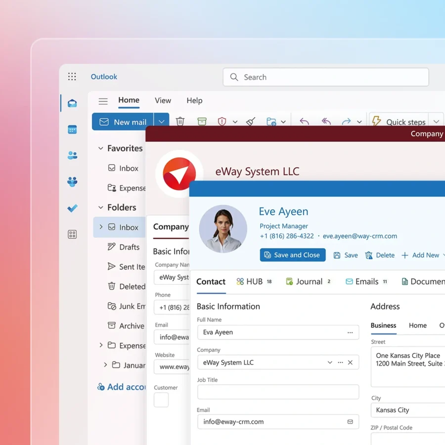

eWay-CRM
Industry: Enterprise Software, Customer Relationship Management (CRM), Microsoft 365 Productivity & Project Management SaaS.
Website
Founder/s: Jan Lalinsky
Headquarters: Kansas City, Missouri, United States
Company: Privately held B2B SaaS
Founded: 2008
Services: Outlook-embedded CRM, contact and company management, sales pipeline and deal tracking, project and task management, email marketing campaigns, AI email summarization and tone analysis, automated contact extraction, document and SharePoint management, mobile CRM with offline access, Power BI reporting, QuickBooks and Microsoft 365 integrations.
eWay-CRM is a Customer Relationship Management (CRM) and project management system embedded directly inside Microsoft Outlook and Microsoft 365. Designed for small to mid-sized businesses, it allows teams to manage contacts, sales pipelines, projects, documents, and email marketing without leaving their inbox.